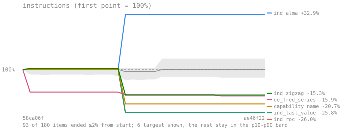
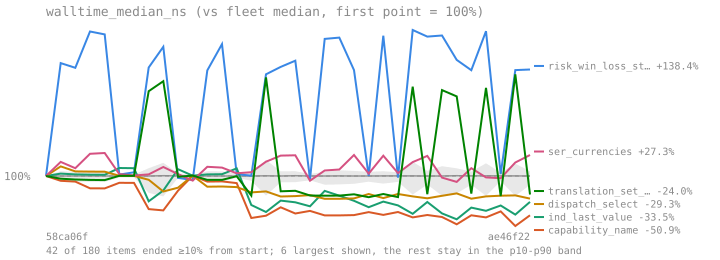
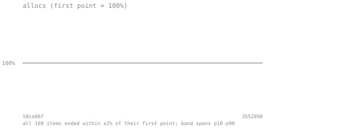

Performance summary#
Generated by
cargo soothfast report
| item | instructions | median | p99 | allocs | polls |
|---|---|---|---|---|---|
finance_query::bt_atr_sizing | 638016 | 71.46µs | 73.96µs | 164 | n/a |
finance_query::bt_base_to_htf_index | 321100 | 26.32µs | 41.92µs | 1 | n/a |
finance_query::bt_bayesian_search | 29234734 | 3.11ms | 3.18ms | 2382 | n/a |
finance_query::bt_fractional_kelly_sizing | 469935 | 47.35µs | 53.90µs | 88 | n/a |
finance_query::bt_grid_pareto | 13042377 | 669.30µs | 782.18µs | 2966 | n/a |
finance_query::bt_grid_search | 13106659 | 662.26µs | 701.01µs | 3012 | n/a |
finance_query::bt_leveraged_margin | 588165 | 56.83µs | 57.34µs | 158 | n/a |
finance_query::bt_monte_carlo | 1067013 | 179.32µs | 185.09µs | 6 | n/a |
finance_query::bt_resample | 1437605 | 105.63µs | 106.57µs | 11 | n/a |
finance_query::bt_sma_crossover | 9458783 | 967.34µs | 1.01ms | 2373 | n/a |
finance_query::bt_strategy_builder | 1072135 | 172.67µs | 202.78µs | 328 | n/a |
finance_query::capability_name | 23 | 1.9ns | 3.5ns | 0 | n/a |
finance_query::cond_bench_always_false | 248401 | 19.26µs | 20.09µs | 6 | n/a |
finance_query::cond_bench_always_true | 4328522 | 436.21µs | 487.23µs | 4045 | n/a |
finance_query::cond_bench_has_position | 4317527 | 439.76µs | 455.32µs | 4045 | n/a |
finance_query::cond_bench_held_for_bars | 1509037 | 162.55µs | 166.03µs | 1041 | n/a |
finance_query::cond_bench_in_loss | 4354804 | 446.51µs | 460.29µs | 4045 | n/a |
finance_query::cond_bench_in_profit | 553714 | 49.86µs | 50.61µs | 142 | n/a |
finance_query::cond_bench_is_long | 4312764 | 440.42µs | 456.20µs | 4045 | n/a |
finance_query::cond_bench_is_short | 396608 | 34.96µs | 35.73µs | 13 | n/a |
finance_query::cond_bench_no_position | 396608 | 35.40µs | 36.96µs | 13 | n/a |
finance_query::cond_bench_stop_loss | 451875 | 42.86µs | 44.12µs | 24 | n/a |
finance_query::cond_bench_take_profit | 438530 | 40.45µs | 41.88µs | 13 | n/a |
finance_query::cond_bench_trailing_stop | 586801 | 52.71µs | 53.57µs | 92 | n/a |
finance_query::cond_bench_trailing_take_profit | 595950 | 55.69µs | 57.58µs | 72 | n/a |
finance_query::de_chart | 107197 | 8.97µs | 9.42µs | 13 | n/a |
finance_query::de_crypto_coins | 346280 | 32.17µs | 33.23µs | 205 | n/a |
finance_query::de_currencies | 591466 | 52.51µs | 53.84µs | 647 | n/a |
finance_query::de_edgar_facts | 13718738 | 1.28ms | 1.41ms | 11899 | n/a |
finance_query::de_edgar_submissions | 5230539 | 467.32µs | 490.50µs | 6784 | n/a |
finance_query::de_fear_and_greed | 1390 | 113.0ns | 117.9ns | 0 | n/a |
finance_query::de_fear_and_greed_crypto_history | 15314 | 1.27µs | 1.46µs | 3 | n/a |
finance_query::de_financials | 235370 | 20.41µs | 20.99µs | 206 | n/a |
finance_query::de_fred_series | 1039714 | 105.44µs | 110.20µs | 873 | n/a |
finance_query::de_hours | 7350 | 663.8ns | 676.2ns | 10 | n/a |
finance_query::de_market_summary | 258626 | 28.12µs | 28.73µs | 228 | n/a |
finance_query::de_news | 44234 | 3.56µs | 3.58µs | 53 | n/a |
finance_query::de_options | 12405 | 1.10µs | 1.19µs | 6 | n/a |
finance_query::de_quote | 9389612 | 979.65µs | 1.07ms | 8235 | n/a |
finance_query::de_screener | 3795933 | 443.57µs | 462.66µs | 4498 | n/a |
finance_query::de_search | 55205 | 4.89µs | 5.42µs | 55 | n/a |
finance_query::de_treasury_yields | 765954 | 68.39µs | 73.61µs | 119 | n/a |
finance_query::de_trending | 18081 | 1.36µs | 1.45µs | 24 | n/a |
finance_query::dispatch_select | 68 | 3.4ns | 3.7ns | 0 | n/a |
finance_query::ind_accumulation_distribution | 27672 | 3.87µs | 3.90µs | 1 | n/a |
finance_query::ind_alma | 107851 | 6.46µs | 6.67µs | 2 | n/a |
finance_query::ind_aroon | 185942 | 12.40µs | 12.56µs | 9 | n/a |
finance_query::ind_atr | 56478 | 10.14µs | 10.25µs | 2 | n/a |
finance_query::ind_awesome_oscillator | 52501 | 9.18µs | 9.45µs | 4 | n/a |
finance_query::ind_balance_of_power | 27342 | 2.25µs | 2.30µs | 2 | n/a |
finance_query::ind_bull_bear_power | 29581 | 7.51µs | 7.79µs | 3 | n/a |
finance_query::ind_cci | 149203 | 17.06µs | 17.55µs | 2 | n/a |
finance_query::ind_chaikin_oscillator | 66908 | 16.35µs | 16.82µs | 4 | n/a |
finance_query::ind_choppiness_index | 280369 | 22.28µs | 22.75µs | 8 | n/a |
finance_query::ind_cmf | 49414 | 3.98µs | 4.08µs | 2 | n/a |
finance_query::ind_cmo | 61742 | 5.13µs | 5.18µs | 2 | n/a |
finance_query::ind_coppock_curve | 72734 | 8.52µs | 8.65µs | 3 | n/a |
finance_query::ind_dema | 40936 | 12.34µs | 12.41µs | 3 | n/a |
finance_query::ind_donchian_channels | 181283 | 11.86µs | 12.33µs | 9 | n/a |
finance_query::ind_elder_ray | 29582 | 7.58µs | 7.97µs | 3 | n/a |
finance_query::ind_fibonacci_pivot_points | 24555 | 2.40µs | 2.42µs | 1 | n/a |
finance_query::ind_fibonacci_retracement | 184909 | 11.19µs | 11.64µs | 9 | n/a |
finance_query::ind_heikin_ashi | 129763 | 16.55µs | 16.92µs | 9 | n/a |
finance_query::ind_hma | 100281 | 14.34µs | 15.21µs | 5 | n/a |
finance_query::ind_ichimoku | 535351 | 36.29µs | 39.16µs | 27 | n/a |
finance_query::ind_keltner_channels | 97515 | 18.67µs | 19.24µs | 5 | n/a |
finance_query::ind_last_value | 20 | 3.1ns | 3.6ns | 0 | n/a |
finance_query::ind_macd | 82597 | 21.77µs | 22.23µs | 7 | n/a |
finance_query::ind_mcginley_dynamic | 21714 | 12.06µs | 12.14µs | 1 | n/a |
finance_query::ind_mfi | 94229 | 7.58µs | 7.70µs | 3 | n/a |
finance_query::ind_momentum | 1186788 | 128.13µs | 133.28µs | 52 | n/a |
finance_query::ind_momentum_single | 8020 | 540.8ns | 561.4ns | 1 | n/a |
finance_query::ind_moving_averages | 479263 | 92.20µs | 96.96µs | 27 | n/a |
finance_query::ind_parabolic_sar | 25132 | 2.23µs | 2.27µs | 1 | n/a |
finance_query::ind_patterns | 1184450 | 98.48µs | 103.40µs | 1 | n/a |
finance_query::ind_pivot_points | 26050 | 2.85µs | 2.92µs | 1 | n/a |
finance_query::ind_roc | 16876 | 1.64µs | 1.75µs | 1 | n/a |
finance_query::ind_sma | 2200136 | 376.26µs | 382.84µs | 1 | n/a |
finance_query::ind_stochastic | 225850 | 16.60µs | 17.10µs | 11 | n/a |
finance_query::ind_stochastic_rsi | 287826 | 28.68µs | 29.61µs | 12 | n/a |
finance_query::ind_supertrend | 117931 | 14.36µs | 14.79µs | 4 | n/a |
finance_query::ind_tema | 58081 | 18.86µs | 19.19µs | 4 | n/a |
finance_query::ind_trend | 1034742 | 93.18µs | 109.89µs | 48 | n/a |
finance_query::ind_true_range | 17091 | 1.19µs | 1.32µs | 1 | n/a |
finance_query::ind_volatility | 673318 | 70.90µs | 72.03µs | 28 | n/a |
finance_query::ind_volume | 316423 | 42.96µs | 44.01µs | 14 | n/a |
finance_query::ind_vwap | 31671 | 3.88µs | 3.97µs | 1 | n/a |
finance_query::ind_vwma | 43618 | 2.97µs | 4.05µs | 1 | n/a |
finance_query::ind_williams_r | 180153 | 11.12µs | 12.54µs | 7 | n/a |
finance_query::ind_wma | 31019 | 4.45µs | 4.51µs | 7 | n/a |
finance_query::ind_zigzag | 18257 | 1.52µs | 1.57µs | 4 | n/a |
finance_query::ref_bench_accumulation_distribution | 569224 | 53.16µs | 55.34µs | 23 | n/a |
finance_query::ref_bench_adx | 5303320 | 552.65µs | 618.37µs | 4930 | n/a |
finance_query::ref_bench_alma | 5892191 | 585.05µs | 639.76µs | 5019 | n/a |
finance_query::ref_bench_aroon | 5626090 | 543.03µs | 587.36µs | 4950 | n/a |
finance_query::ref_bench_atr | 5540288 | 549.91µs | 576.09µs | 4996 | n/a |
finance_query::ref_bench_awesome_oscillator | 3084770 | 335.96µs | 350.24µs | 2636 | n/a |
finance_query::ref_bench_balance_of_power | 574494 | 49.54µs | 50.37µs | 25 | n/a |
finance_query::ref_bench_bear_power | 1535956 | 149.01µs | 155.07µs | 806 | n/a |
finance_query::ref_bench_bollinger | 6095668 | 577.34µs | 587.42µs | 4968 | n/a |
finance_query::ref_bench_bull_power | 5296612 | 517.78µs | 547.99µs | 4238 | n/a |
finance_query::ref_bench_candle_body | 252383 | 19.49µs | 22.02µs | 6 | n/a |
finance_query::ref_bench_candle_range | 5160127 | 519.30µs | 547.77µs | 5043 | n/a |
finance_query::ref_bench_cci | 3250751 | 321.84µs | 331.66µs | 2605 | n/a |
finance_query::ref_bench_chaikin_oscillator | 645690 | 66.91µs | 67.59µs | 26 | n/a |
finance_query::ref_bench_choppiness_index | 5810223 | 565.02µs | 604.82µs | 5002 | n/a |
finance_query::ref_bench_close | 5184961 | 508.23µs | 519.93µs | 5043 | n/a |
finance_query::ref_bench_cmf | 584657 | 52.78µs | 55.68µs | 25 | n/a |
finance_query::ref_bench_cmo | 3077578 | 309.70µs | 332.31µs | 2598 | n/a |
finance_query::ref_bench_coppock_curve | 3336742 | 328.15µs | 342.50µs | 2559 | n/a |
finance_query::ref_bench_dema | 5489784 | 549.53µs | 588.03µs | 4875 | n/a |
finance_query::ref_bench_donchian | 5991119 | 586.31µs | 620.47µs | 4976 | n/a |
finance_query::ref_bench_elder_bear_power | 1534642 | 147.73µs | 152.59µs | 806 | n/a |
finance_query::ref_bench_elder_bull_power | 5208944 | 520.12µs | 530.49µs | 4238 | n/a |
finance_query::ref_bench_ema | 5391690 | 542.54µs | 550.09µs | 4963 | n/a |
finance_query::ref_bench_gap_pct | 2493031 | 278.93µs | 286.10µs | 2489 | n/a |
finance_query::ref_bench_high | 5185942 | 521.30µs | 547.18µs | 5043 | n/a |
finance_query::ref_bench_hma | 5398153 | 543.80µs | 552.59µs | 4957 | n/a |
finance_query::ref_bench_htf | 6523088 | 629.26µs | 645.45µs | 7039 | n/a |
finance_query::ref_bench_htf_region | 6415103 | 631.27µs | 663.16µs | 7039 | n/a |
finance_query::ref_bench_ichimoku | 6363178 | 614.50µs | 628.61µs | 4836 | n/a |
finance_query::ref_bench_ichimoku_custom | 6315811 | 612.51µs | 656.10µs | 4836 | n/a |
finance_query::ref_bench_is_bearish | 253382 | 19.60µs | 20.50µs | 6 | n/a |
finance_query::ref_bench_is_bullish | 253382 | 19.65µs | 20.53µs | 6 | n/a |
finance_query::ref_bench_keltner | 5829920 | 603.80µs | 783.30µs | 4972 | n/a |
finance_query::ref_bench_low | 5188936 | 508.89µs | 522.02µs | 5043 | n/a |
finance_query::ref_bench_macd | 3294554 | 338.11µs | 373.51µs | 2541 | n/a |
finance_query::ref_bench_mcginley | 5506997 | 550.07µs | 586.08µs | 4963 | n/a |
finance_query::ref_bench_median_price | 5161125 | 511.44µs | 525.79µs | 5043 | n/a |
finance_query::ref_bench_mfi | 5592352 | 539.66µs | 566.40µs | 4998 | n/a |
finance_query::ref_bench_momentum | 3101433 | 304.85µs | 308.85µs | 2552 | n/a |
finance_query::ref_bench_obv | 627692 | 59.96µs | 64.04µs | 30 | n/a |
finance_query::ref_bench_open | 5185942 | 511.50µs | 542.34µs | 5043 | n/a |
finance_query::ref_bench_parabolic_sar | 5841079 | 582.35µs | 592.78µs | 5056 | n/a |
finance_query::ref_bench_price | 5184961 | 504.42µs | 546.17µs | 5043 | n/a |
finance_query::ref_bench_price_change_pct | 2913701 | 297.86µs | 316.32µs | 2489 | n/a |
finance_query::ref_bench_relative_volume | 5667927 | 559.92µs | 583.67µs | 4949 | n/a |
finance_query::ref_bench_roc | 2908626 | 307.02µs | 310.60µs | 2587 | n/a |
finance_query::ref_bench_rsi | 5536795 | 542.46µs | 578.84µs | 4994 | n/a |
finance_query::ref_bench_sma | 5395606 | 536.08µs | 560.95µs | 4963 | n/a |
finance_query::ref_bench_stochastic | 6142999 | 593.03µs | 663.61µs | 4987 | n/a |
finance_query::ref_bench_stochastic_rsi | 5996353 | 588.29µs | 641.16µs | 4831 | n/a |
finance_query::ref_bench_supertrend | 6031790 | 589.32µs | 601.17µs | 5021 | n/a |
finance_query::ref_bench_tema | 5396268 | 540.83µs | 578.95µs | 4781 | n/a |
finance_query::ref_bench_true_range | 5330621 | 549.83µs | 566.13µs | 5059 | n/a |
finance_query::ref_bench_typical_price | 5602394 | 554.17µs | 575.90µs | 5043 | n/a |
finance_query::ref_bench_volume | 5185942 | 517.08µs | 525.04µs | 5043 | n/a |
finance_query::ref_bench_vwap | 5621813 | 547.36µs | 558.08µs | 5060 | n/a |
finance_query::ref_bench_vwma | 5353839 | 539.49µs | 553.50µs | 4964 | n/a |
finance_query::ref_bench_williams_r | 744915 | 61.26µs | 65.10µs | 29 | n/a |
finance_query::ref_bench_wma | 5481344 | 538.00µs | 546.91µs | 4969 | n/a |
finance_query::risk_beta | 270416 | 61.21µs | 61.58µs | 0 | n/a |
finance_query::risk_calmar | 156 | 16.6ns | 18.1ns | 0 | n/a |
finance_query::risk_historical_cvar | 4313739 | 338.95µs | 346.26µs | 2 | n/a |
finance_query::risk_historical_var | 31047001 | 2.56ms | 2.65ms | 2 | n/a |
finance_query::risk_information_ratio | 145879 | 39.15µs | 42.27µs | 1 | n/a |
finance_query::risk_kelly_criterion | 30958 | 3.75µs | 3.87µs | 16 | n/a |
finance_query::risk_max_drawdown | 35115 | 8.03µs | 8.10µs | 1 | n/a |
finance_query::risk_omega_ratio | 143401 | 30.57µs | 30.84µs | 0 | n/a |
finance_query::risk_parametric_cvar | 100416 | 30.59µs | 30.77µs | 0 | n/a |
finance_query::risk_parametric_var | 100412 | 30.60µs | 30.77µs | 0 | n/a |
finance_query::risk_sharpe | 100406 | 30.59µs | 30.85µs | 0 | n/a |
finance_query::risk_sortino | 170035 | 30.58µs | 30.86µs | 0 | n/a |
finance_query::risk_tracking_error | 145876 | 39.54µs | 40.77µs | 1 | n/a |
finance_query::risk_ulcer_index | 619414 | 174.40µs | 176.50µs | 2 | n/a |
finance_query::risk_win_loss_stats | 389693 | 140.00µs | 144.07µs | 25 | n/a |
finance_query::rss_parse | 64637 | 5.94µs | 6.04µs | 48 | n/a |
finance_query::score_news | 952514 | 87.67µs | 89.17µs | 976 | n/a |
finance_query::score_transcript | 47050249 | 4.84ms | 4.98ms | 42100 | n/a |
finance_query::ser_currencies | 202363 | 16.33µs | 16.84µs | 8 | n/a |
finance_query::stream_deserialize | 14301 | 1.12µs | 1.20µs | 4 | n/a |
finance_query::stream_serialize | 10463 | 943.0ns | 988.8ns | 4 | n/a |
finance_query::ticker_chart_then_cached | 14710 | 1.37µs | 1.43µs | 20 | n/a |
finance_query::ticker_quote_polls | 222762 | 7.22µs | 7.74µs | 3 | 1 |
finance_query::ticker_quote_then_cached | 419883 | 11.19µs | 12.00µs | 4 | n/a |
finance_query::tickers_batch_quote_then_cached | 237438 | 9.46µs | 9.76µs | 16 | n/a |
finance_query::translate_dictionary | 19209 | 1.92µs | 1.94µs | 49 | n/a |
finance_query::translation_set_backend | 244 | 17.9ns | 20.1ns | 1 | n/a |
finance_query::translation_translate | 52913 | 3.50µs | 3.64µs | 79 | n/a |
finance_query::translation_translate_with | 52583 | 3.47µs | 3.64µs | 77 | n/a |



built with cargo soothfast docs build
source